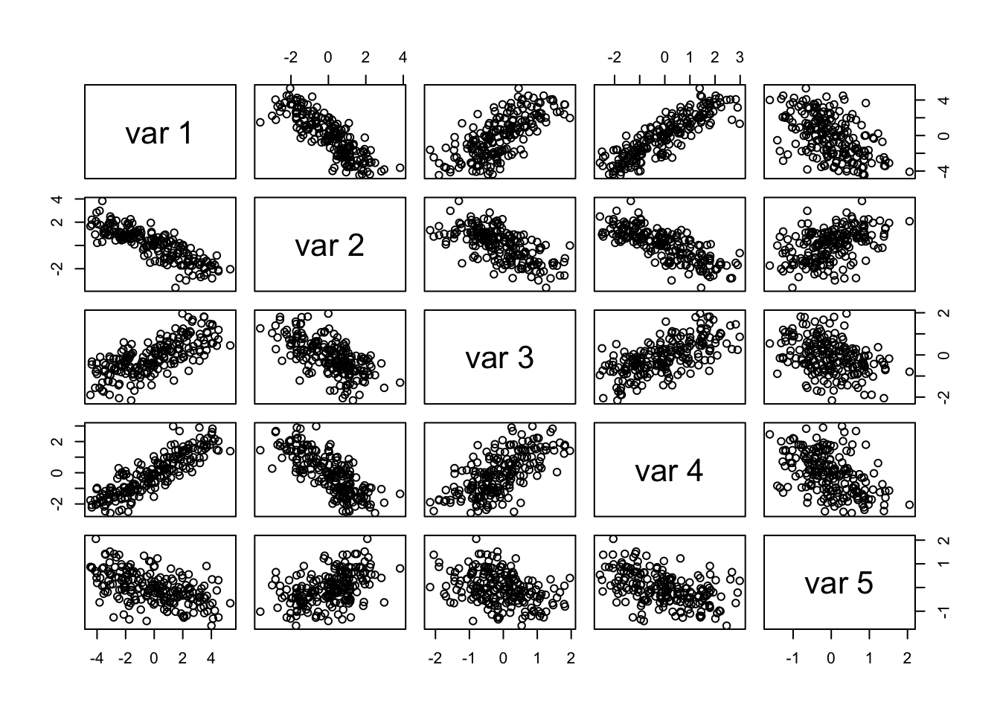
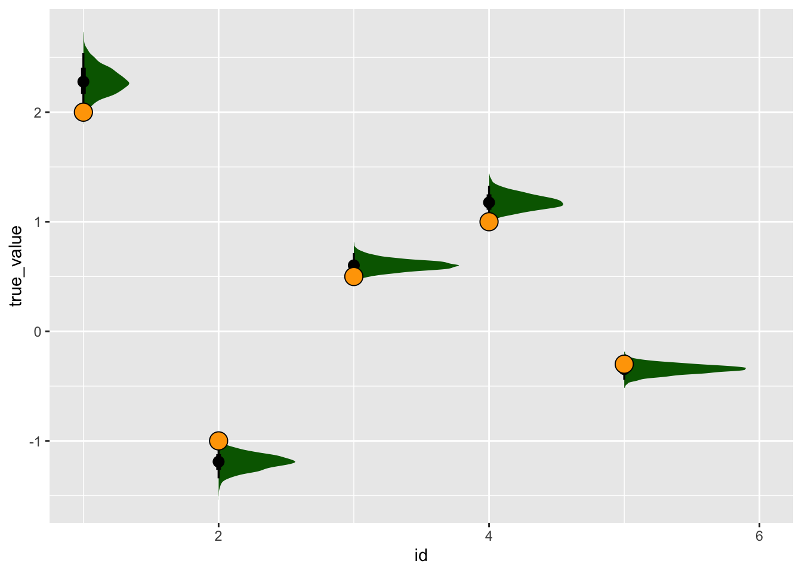
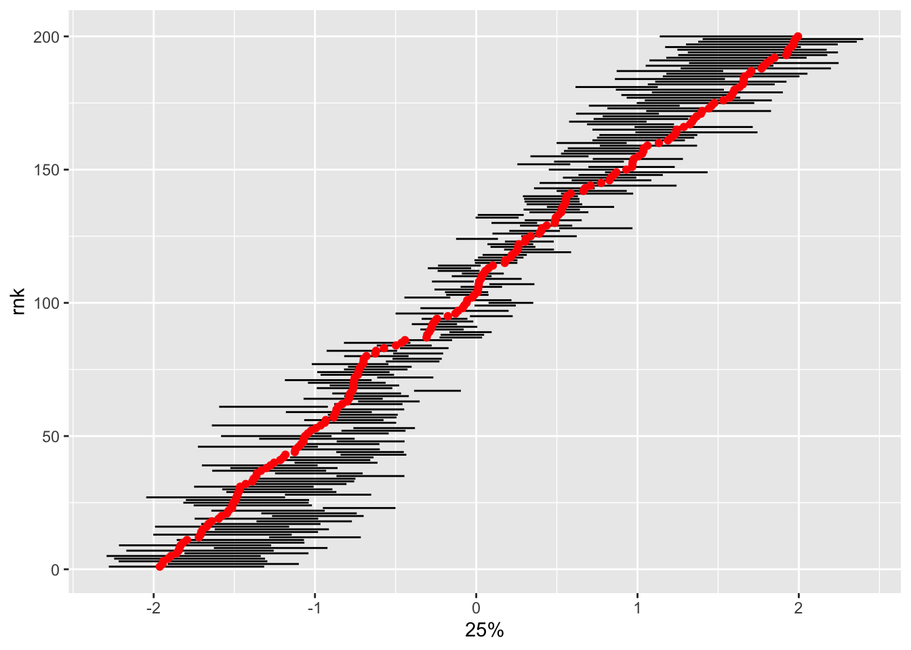

library(targets)
library(ggplot2)
library(tidyverse)
library(tidybayes)Imagine we have many measurments, all correlated with each other. Where do these correlations come from? One possibility is that all these measurents are caused by the values of some unobservable, latent trait. This happens in ecology when we imagine that, for example, the Competitive Ability of a species appears to us in the form of measurable traits that (to us) seem to represent this trait: leaf size, growth rate, alleopathy, etc.
let’s start with latent traits
set.seed(1234)
alpha <- runif(200, min = -2, max = 2)
five_betas <- c(2,-1, .5, 1, -.3)
sigma_obs <- .6
ymean <- alpha %o% five_betas
## sample a random number for each of these and put in back
ind <- which(ymean != 0, arr.ind = TRUE)
yobs <- matrix(rep(0L, times = 200*5), nrow = 200, ncol = 5)
yobs[ind] <- rnorm(n = 200*5, mean = ymean[ind], sd = sigma_obs)
Warning
My toxic trait is that I like for-loops but never write them
pairs(yobs)
library(cmdstanr)This is cmdstanr version 0.5.3- CmdStanR documentation and vignettes: mc-stan.org/cmdstanr- CmdStan path: /Users/amacdonald/.cmdstan/cmdstan-2.31.0- CmdStan version: 2.31.0latent_continuous <- cmdstan_model(
stan_file = here::here("posts/2023-03-20-latent-continuous/latent_continuous.stan"))
datalist <- list(N = nrow(yobs),
y = yobs)
latent_cont_samp <- latent_continuous$sample(
data = datalist, parallel_chains = 4, refresh = 0)Running MCMC with 4 parallel chains...
Chain 1 finished in 10.1 seconds.
Chain 2 finished in 10.1 seconds.
Chain 3 finished in 10.0 seconds.
Chain 4 finished in 10.1 seconds.
All 4 chains finished successfully.
Mean chain execution time: 10.1 seconds.
Total execution time: 10.4 seconds.latent_cont_samp variable mean median sd mad q5 q95 rhat ess_bulk ess_tail
lp__ -89.68 -89.40 14.47 14.69 -113.82 -66.26 1.01 466 1314
beta[1] -0.01 0.00 2.27 3.35 -2.42 2.41 1.74 6 159
beta[2] 0.00 0.02 1.18 1.75 -1.27 1.27 1.75 6 115
beta[3] 0.00 0.00 0.60 0.88 -0.66 0.66 1.74 6 125
beta[4] 0.00 -0.03 1.17 1.73 -1.26 1.26 1.74 6 117
beta[5] 0.00 0.00 0.35 0.51 -0.40 0.40 1.74 6 128
sigma 0.60 0.60 0.01 0.01 0.57 0.62 1.00 4610 2803
alpha[1] 0.00 -0.13 1.06 1.54 -1.31 1.30 1.73 6 127
alpha[2] 0.00 -0.01 0.52 0.72 -0.74 0.74 1.73 6 129
alpha[3] 0.00 0.01 0.48 0.65 -0.70 0.69 1.73 6 113
# showing 10 of 207 rows (change via 'max_rows' argument or 'cmdstanr_max_rows' option)that was.. a spectacular failure! is there a way that actully works
library(cmdstanr)
latent_cont_constrained <- cmdstan_model(
stan_file = here::here(
"posts/2023-03-20-latent-continuous/latent_cont_constrained.stan"))
latent_cont_constrained_samp <- latent_cont_constrained$sample(
data = datalist, parallel_chains = 4, refresh = 0)Running MCMC with 4 parallel chains...Chain 1 Informational Message: The current Metropolis proposal is about to be rejected because of the following issue:Chain 1 Exception: normal_lpdf: Scale parameter is 0, but must be positive! (in '/var/folders/x7/l08zn2396g797m5ws54np_6w0000gp/T/Rtmpi4HWQ5/model-72c943da0867.stan', line 23, column 4 to column 32)Chain 1 If this warning occurs sporadically, such as for highly constrained variable types like covariance matrices, then the sampler is fine,Chain 1 but if this warning occurs often then your model may be either severely ill-conditioned or misspecified.Chain 1 Chain 2 Informational Message: The current Metropolis proposal is about to be rejected because of the following issue:Chain 2 Exception: normal_lpdf: Scale parameter is 0, but must be positive! (in '/var/folders/x7/l08zn2396g797m5ws54np_6w0000gp/T/Rtmpi4HWQ5/model-72c943da0867.stan', line 23, column 4 to column 32)Chain 2 If this warning occurs sporadically, such as for highly constrained variable types like covariance matrices, then the sampler is fine,Chain 2 but if this warning occurs often then your model may be either severely ill-conditioned or misspecified.Chain 2 Chain 2 finished in 10.4 seconds.
Chain 4 finished in 10.5 seconds.
Chain 1 finished in 10.7 seconds.
Chain 3 finished in 10.7 seconds.
All 4 chains finished successfully.
Mean chain execution time: 10.6 seconds.
Total execution time: 10.9 seconds.# tidybayes::get_variables(latent_cont_constrained_samp)tidybayes::gather_rvars(latent_cont_constrained_samp, betatrans[id]) |>
mutate(true_value = five_betas) |>
ggplot(aes(x = id, dist = .value)) +
tidybayes::stat_halfeye(fill = "darkgreen") +
geom_point(aes(x = id, y = true_value), pch = 21, fill = "orange", size = 5)Warning: Using the `size` aesthietic with geom_segment was deprecated in ggplot2 3.4.0.
ℹ Please use the `linewidth` aesthetic instead.
So it seems that with some simple constraints on the signs, this model samples just fine!
Does it also get the latent states right?
tidybayes::summarise_draws(latent_cont_constrained_samp, quantile) |>
filter(stringr::str_detect(variable, "alpha")) |>
bind_cols(true_alpha = alpha) |>
mutate(id = readr::parse_number(variable),
rnk = dense_rank(true_alpha)) |>
ggplot(aes(x = `25%`, xend = `75%`, y = rnk, yend = rnk)) +
geom_segment() +
geom_point(aes(x = true_alpha, y = rnk), inherit.aes = FALSE, col = "red")What if we experiment with a standard deviation for the alpha (ie a hierarchical model)
latent_cont_constr_hier <- cmdstan_model(
stan_file = here::here("posts/2023-03-20-latent-continuous/latent_cont_constr_hier.stan"))
latent_cont_constr_hier_samp <- latent_cont_constr_hier$sample(
data = datalist, parallel_chains = 4, refresh = 0)Running MCMC with 4 parallel chains...Chain 1 Informational Message: The current Metropolis proposal is about to be rejected because of the following issue:Chain 1 Exception: normal_lpdf: Scale parameter is 0, but must be positive! (in '/var/folders/x7/l08zn2396g797m5ws54np_6w0000gp/T/Rtmpi4HWQ5/model-72c940a3b623.stan', line 24, column 4 to column 32)Chain 1 If this warning occurs sporadically, such as for highly constrained variable types like covariance matrices, then the sampler is fine,Chain 1 but if this warning occurs often then your model may be either severely ill-conditioned or misspecified.Chain 1 Chain 2 Informational Message: The current Metropolis proposal is about to be rejected because of the following issue:Chain 2 Exception: normal_lpdf: Scale parameter is 0, but must be positive! (in '/var/folders/x7/l08zn2396g797m5ws54np_6w0000gp/T/Rtmpi4HWQ5/model-72c940a3b623.stan', line 28, column 2 to column 29)Chain 2 If this warning occurs sporadically, such as for highly constrained variable types like covariance matrices, then the sampler is fine,Chain 2 but if this warning occurs often then your model may be either severely ill-conditioned or misspecified.Chain 2 Chain 4 finished in 17.8 seconds.
Chain 3 finished in 18.2 seconds.
Chain 2 finished in 20.1 seconds.
Chain 1 finished in 20.4 seconds.
All 4 chains finished successfully.
Mean chain execution time: 19.1 seconds.
Total execution time: 20.5 seconds.Warning: 4 of 4 chains had an E-BFMI less than 0.2.
See https://mc-stan.org/misc/warnings for details.tidybayes::summarise_draws(latent_cont_constr_hier_samp, quantile) |>
filter(stringr::str_detect(variable, "alpha\\[")) |>
bind_cols(true_alpha = alpha) |>
mutate(id = readr::parse_number(variable),
rnk = dense_rank(true_alpha)) |>
ggplot(aes(x = `25%`, xend = `75%`, y = rnk, yend = rnk)) +
geom_segment() +
geom_point(aes(x = true_alpha, y = rnk), inherit.aes = FALSE, col = "red")